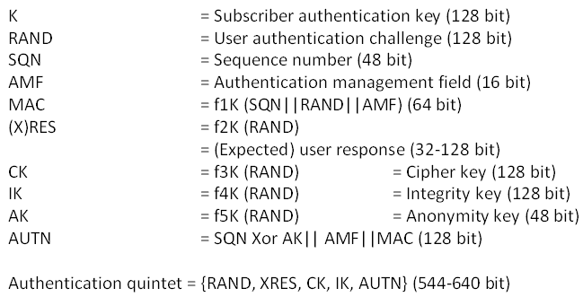
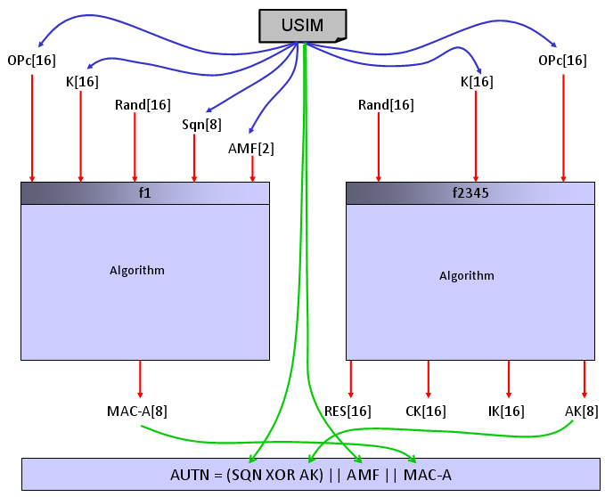

LTE Quick Reference Go Back To Index Home : www.sharetechnote.com
Authentication
Authentication is a process by which UE and Network check if the other party has right authority to communicate each other. It is very similar to 'login process' when you use a computer. The only difference is that in computer login process, only the computer is checking your authority and you are not technically checking the PC's authority (Of course, you have your own 'will' to use it or not to use it.. but it is not the technically determistic authentication algorithm). In LTE (in WCDMA as well), Network authenticate UE and UE also authenticate the Network. Authetication on both side should be passed for the communication to proceed.
Authentication" process is a process similar to 'log in' process when you use a computer. In C2K and GSM, this authentication process is 'uni-directional', meaning that only Network authenticate UE and UE does not authenticate the network. As you may easily guess, this would cause a serious security problem. If I make a fake network which accept any UE, I can cheat a UE to camp on the fake network rather than the one the UE is supposed to camp on to. (But this kind of 'uni directional' authentication would make it so easy to test a UE using network simulator -:)
To improve this security issues, in LTE (in WCDMA as well) they do 'bi-directional' authentication, meaning that UE has to pass the authentication process and Newtork also has to pass the process as well.
The overall authentication process is as follows.

There are three main components of this authentication process :
i) Input Parameters
ii) Authentication Algorithm
iii) Output Values (calcuated by Authentication Algorithm using the Input Parameters).
Both UE and Network uses the same Input Parameters and the same Authentication Algorithms, so they both should produce the same Output Values, otherwise Authentication fails.
One thing you have to keep in mind is that UE and Network exchange only Input Parameters and Output values, not the authentication Algorithm. Authentication Algorithm on UE side is stored in USIM and Authentication Algorithm on NW side is stored in Authentication Center. Both UE and NW just assume that they would use the identical algorithms.
Normally use use diffent Authentication Algorithm for testing and for live network. The most commonly used algorithm for testing is what we often call "Dummy XOR" algorithm which is defined in 36.508 section 4.9 Common test USIM parameters for LTE and 34.408 section 8 Test USIM Parameters for WCDMA.
The most common used algorithm in live network (as far as I know) is Milenage algorithm.
One example of Authentication Request and Authentication Response is as follows. You would notice that RAND, AUTN are carried by Authentication Request message and RES value is carried by Authentication Response.
NAS_LTE:EMM,Authentication request
Authentication request ::= DIVISION
+-Security header type ::= V
| +-Security header type ::= CHOICE [Plain NAS message, not security protected]
+-EPS mobility management protocol discriminator ::= V
| +-Protocol discriminator ::= PD [7]
+-Authentication request message type ::= V
| +-Message type ::= MSG [52]
+-Spare half octet ::= V
| +-Spare half octet ::= FIX [0]
+-NAS key set identifier ASME ::= V
| +-TSC ::= CHOICE [native security context (for KSI ASME)]
| +-NAS key set identifier ::= CHOICE [possible values for the NAS key set identifier 0]
+-Authentication parameter RAND ::= V
| +-Octet1-Octet16 ::= DIVISION
| +-RAND value ::= OCTETARRAY SIZE(16..16) [A3DE0C6D363E30C364A4078F1BF8D577]
+-Authentication parameter AUTN ::= LV
+-Octet1 ::= DIVISION
| +-Length of AUTN contents ::= LEN (0..255) [16]
+-Octet2-Octet17 ::= DIVISION
+-AUTN ::= OCTETARRAY SIZE(0..16) [5E726B56B4EC9001A3CF2E5E726BC6B5]
NAS_LTE:EMM,Authentication response
Authentication response ::= DIVISION
+-Security header type ::= V
| +-Security header type ::= CHOICE [Plain NAS message, not security protected]
+-EPS mobility management protocol discriminator ::= V
| +-Protocol discriminator ::= PD [7]
+-Authentication response message identity ::= V
| +-Message type ::= MSG [53]
+-Authentication response parameter ::= LV
+-Octet1 ::= DIVISION
| +-Length of Authentication response parameter contents ::= LEN (0..255) [8]
+-Octet2-17 ::= DIVISION
+-RES ::= OCTETARRAY SIZE(0..16) [A3CF2E5E726B56B4]
As you see from the two messages above, there are only three values which plays critical roles. RAND, AUTN, RES. RAND is not a calculated value.. it is just randomly assinged by network Authentication Center and AUTN and RES is calculated by special algorithm as illustrated below. (If you want to know the very detailed process, refer to 3GPP TS 35.206 V4.0.0 (2001-04) and analyze the source code line by line. If you just want to get general understanding, following illustration would be enough.)

